1. Glavna forma
1.1 Forma računarskog centra
- Broj pored nacrtanog čovečuljka označava koliko mesta ima u učionici.
- Postojanje projektora u učionici.
- Postojanje obične table u učionici.
- Postojanje pametne table u učionici.
- Instaliran linux operativni sistem u učionici.
- Instaliran windows operativni sistem u učionici.
1.2 Forma učionice
Ispod naziva učionice postoji par sličica:
- 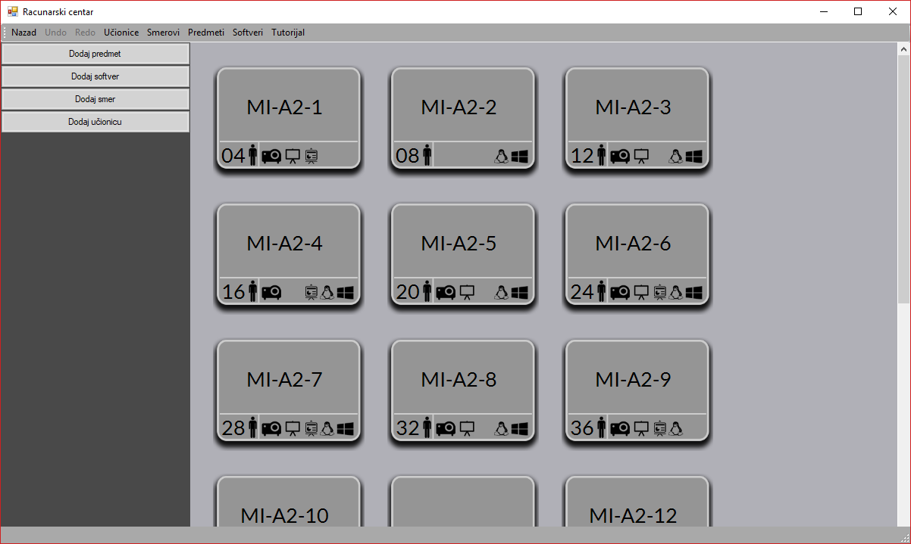
- 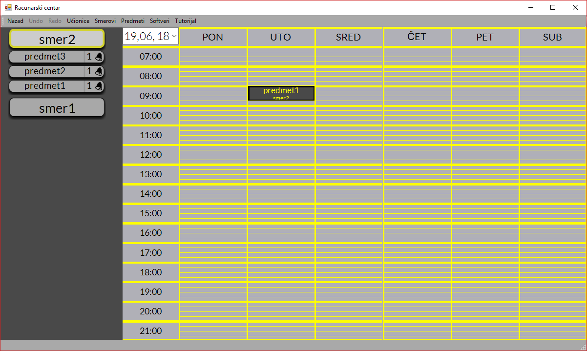
2. Predmet
2.1 Dodavanje predmeta
2.2 Izmena predmeta
2.3 Brisanje predmeta
-
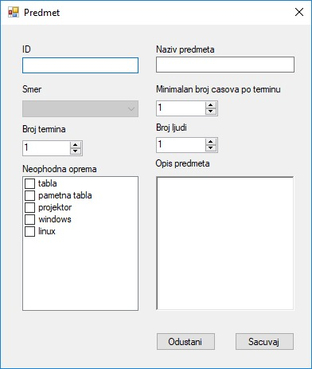
Dodavanje predmeta se vrši popunjavanjem prozora za dodavanje predmeta. Popunjavanjem polja, definisu se svi neophodni parametri za predmet.
- 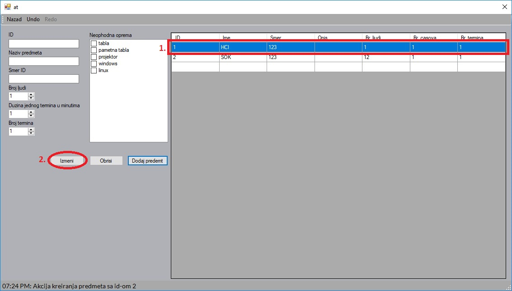
- 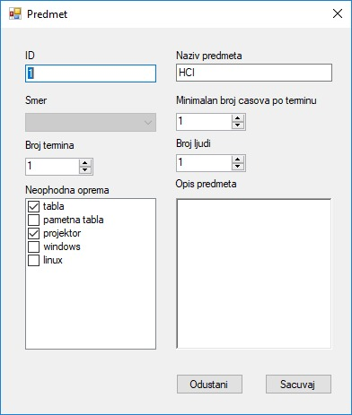
- 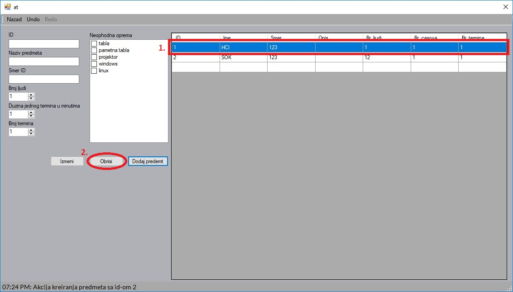
3. Softver
3.1 Dodavanje softvera
3.2 Izmena softvera
3.3 Brisanje softvera
-
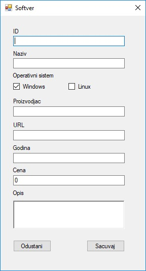
Dodavanje softvera se vrši popunjavanjem prozora da dodavanje softvera. Popunjavanjem polja, definisu se svi neophodni parametri za softver.
- 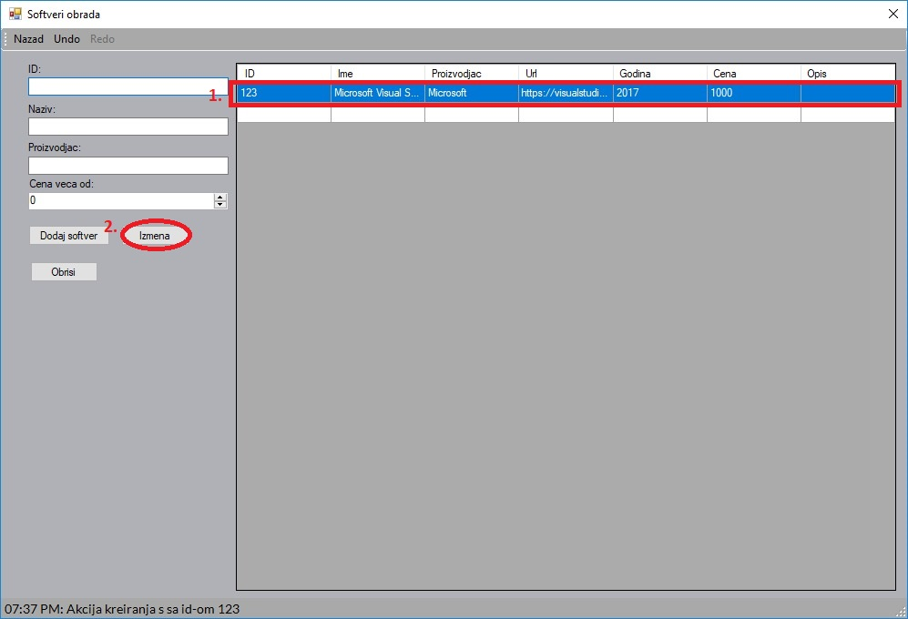
- 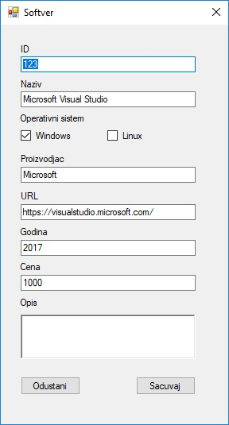
- 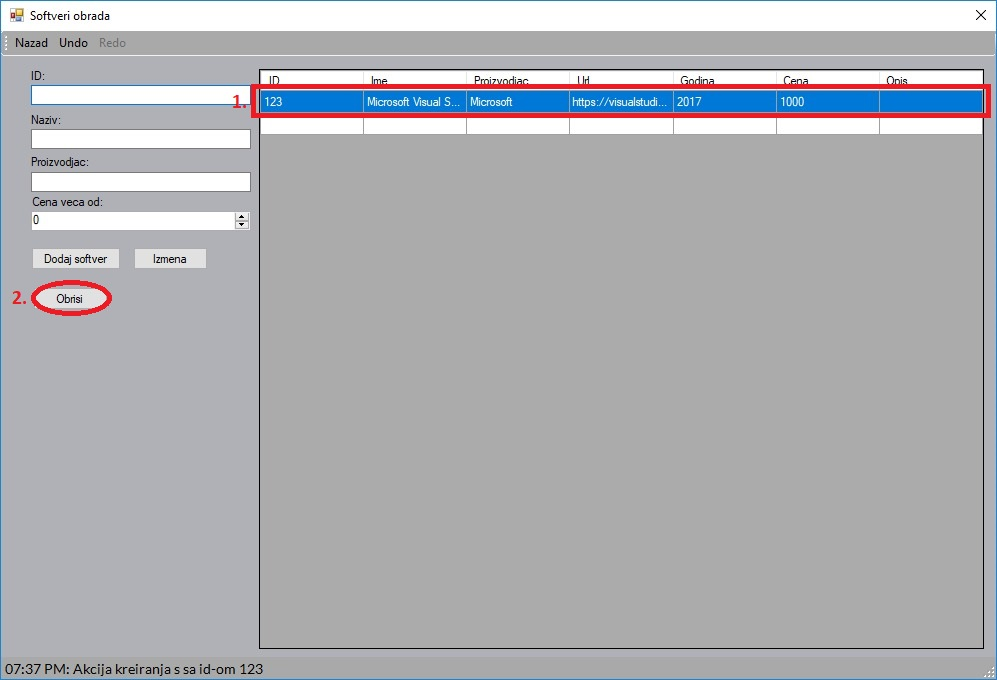
4. Smer
4.1 Dodavanje smera
4.2 Izmena smera
4.3 Brisanje smera
-
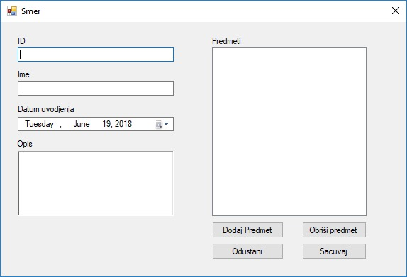
Dodavanje smera se vrši popunjavanjem prozora za dodavanje smera. Popunjavanjem polja, definisu se svi neophodni parametri za smer.
- 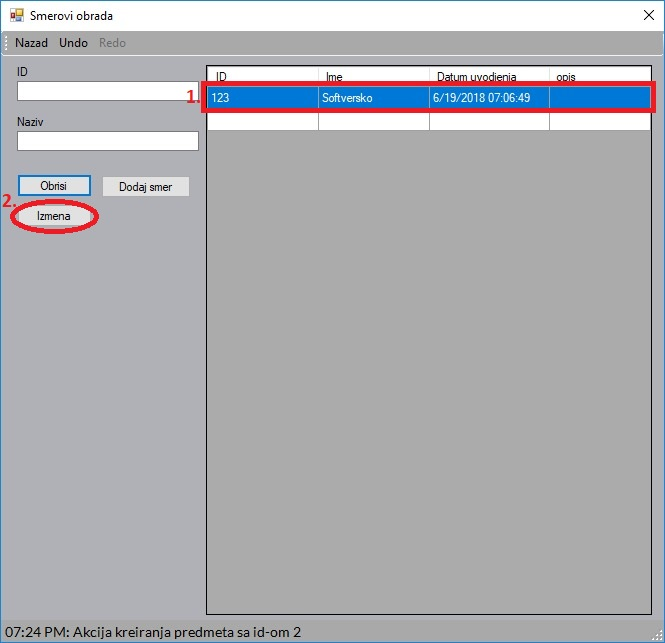
- 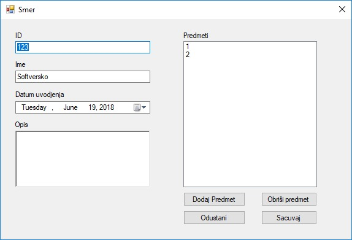
- 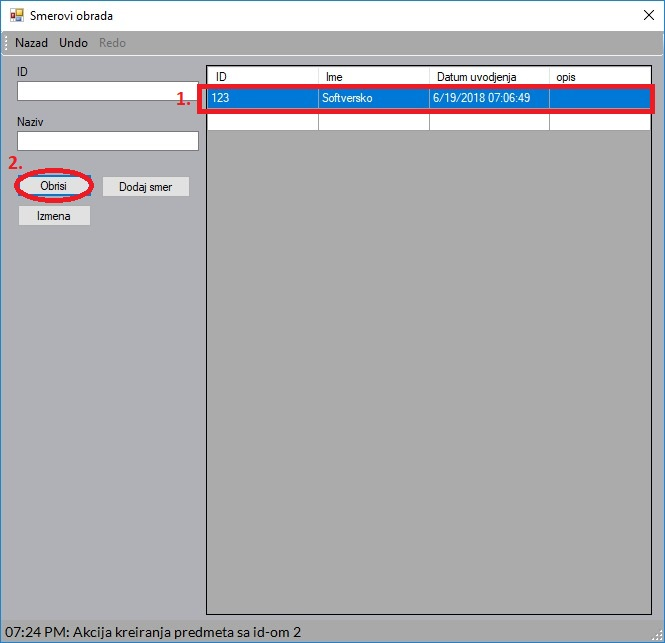
5. Ucionica
5.1 Dodavanje ucionice
5.2 Izmena ucionice
5.3 Brisanje ucionice
-
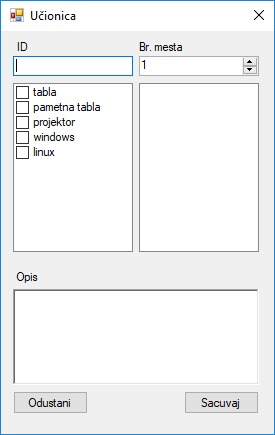
Dodavanje ucionice se vrši popunjavanjem prozora za dodavanje ucionice. Popunjavanjem polja, definisu se svi neophodni parametri za ucionicu.
- 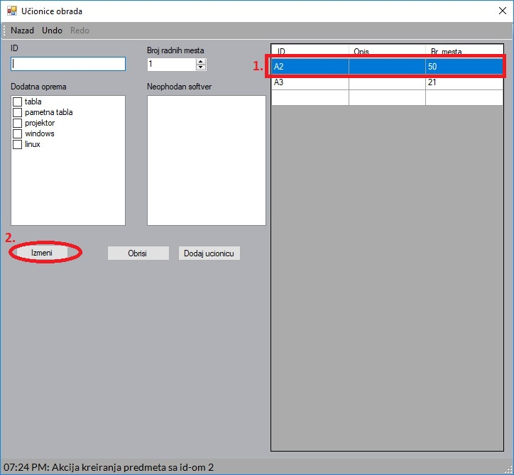
- 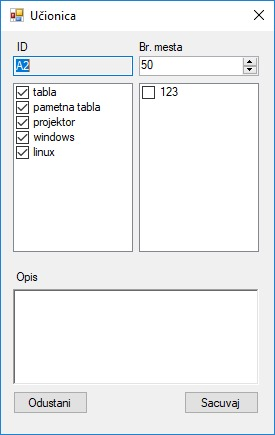
- 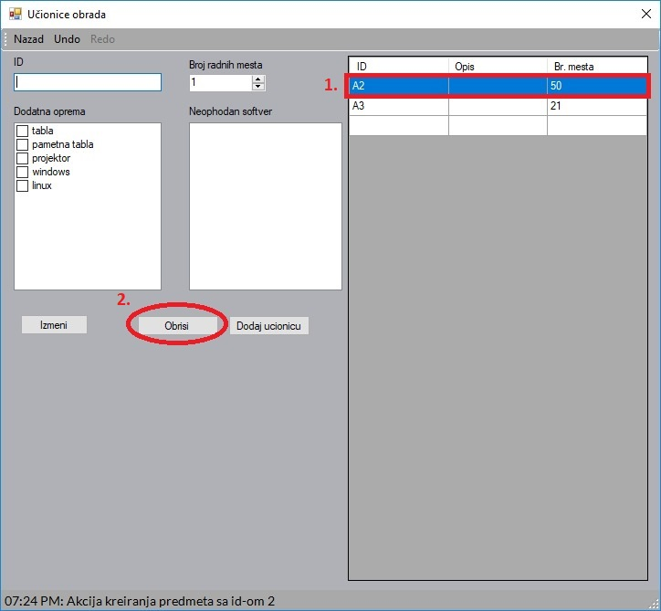
6. Termin
6.1 Dodavanje termina
6.2 Izmena termina
6.3 Brisanje termina

Dodavanje termina se vrši popunjavanjem prozora za dodavanje termina. Popunjavanjem polja, definisu se svi neophodni parametri za termin.
TO DO izmena termina
TO DO brisanje termina